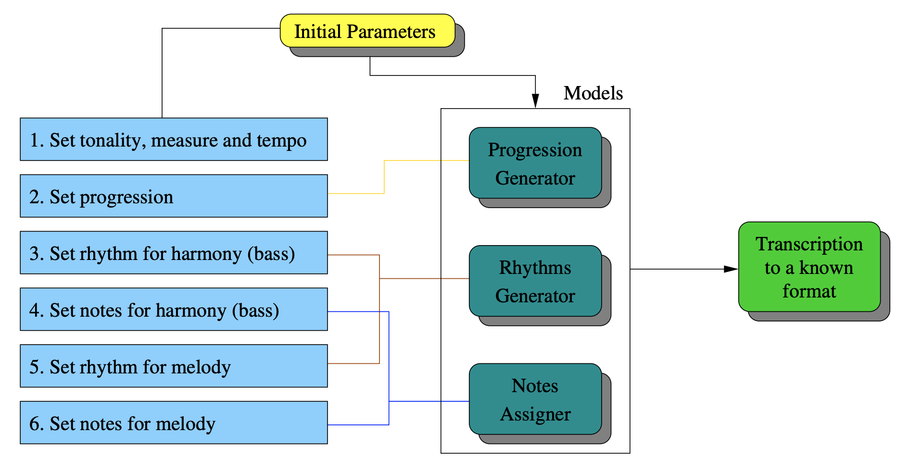
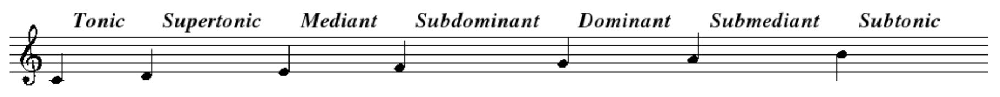

Music is an expression of emotion, shared with its listeners through skilled usage of instruments, both internal and external to the body. Music can also be defined as a sequence of frequencies through time. Computers tend to prefer this second definition.
Algorithmic composition is the usage of algorithms to generate music. Consider the following algorithm:
Sample \(n\) integers from a discrete uniform distribution on the interval \([0, 11]\)
Generate a sound file which consists of the \(n\) frequencies played consecutively for \(0.5\) seconds each
This algorithm is non-deterministic, so can be repeatedly executed to produce novel music! Nonetheless, this algorithm sucks, because its output will tend to sound terrible to humans. Fortunately, music theory offers great tools for describing a structure that sounds good to humans. So, we should be able to greatly improve the algorithm by incorporating some music theoretic ideas.
The paper of focus defines the following architecture for musical composition:

Each model nicely maps to a computable task. Thus, the collective computable tasks form an algorithm for composition. Although all three models are vital for the production of a pleasing piece, I find the Progression Generator to be by far the most interesting. Consequently, I will dive deep into the Progression Generator, and provide brief commentary and analysis on the Rhythms Generator and Notes Assigner.
Let us begin by defining and discussing some musical terms:
A tone is a steady periodic sound, and is characterized by its duration, pitch (or frequency), intensity (or loudness), and timbre (or quality)
A scale is a sequence of successive tones within a one-octave range [The Complete Idiot’s Guide to Music Theory, pg 27]
An octave is the interval between one musical tone and another with double its frequency
Tonality is the arrangement of tones and/or chords in a hierarchy of perceived relations
The perceived relations can be best understood with tones and with respect to a specific scale
For example, the C major scale consists of C, D, E, F, G, A, B, a subset of seven of the twelve-equal temperament tones

(The seven notes are played in ascending order with respect to frequency, the C one octave higher than the base C is played, then the notes are played in descending order)
Seven tones per octave make up every scale. The first tone in every scale is called the tonic, the second the supertonic, etc. These names describe the perceived relations between the tones. Numbering these tones relative to the tonic makes them degrees
Modulation is the process of changing from one tonality to another (i.e. moving tonics from C to G)
An anacrusis is a note or sequence of notes which preceeds the first beat of a musical phrase
The Progression Generator generates a chord progression. “The cornerstone of harmony is the progression underneath the musical content, this is the main structure and foundation of the song. It can be represented by a string of sequential chords over time. Each chord is a degree used in the tonality of the musical phrase” [source https://hal.inria.fr/hal-01257155/document, page 7]. The authors define an intriguing generative model for chord progressions: a stochastic context-free grammar, also known as a probabilistic context-free grammar (PCFG).
Loosely, a context-free grammar (CFG) is a set of rules and symbols that defines a language. Formally, a CFG is a \(4\)-tuple \(G = (V, \Sigma, R, S)\), where:
\(V\) is a finite set; each element \(v \in V\) is a non-terminal character or variable
\(\Sigma\) is a finite set of terminals, disjoint from \(V\), and is the alphabet of the language defined by the grammar \(G\)
\(R\) is a finite relation in \( V \times (V \cup \Sigma )^{*}\), where the asterisk represents the Kleene star operation. The members of \(R\) are the production rules of the grammar
\(S\) is the start variable used to represent the whole sentence. \(S \in V\)
Production rules in can be denoted by:
\(A \rightarrow E\)
where \(A \in V,\;E \in V \cup \Sigma\)
Loosely, a PCFG is a CFG with probabilities attached to each rule. Formally, a PCFG is a \(5\)-tuple \(G = (V, \Sigma, R, S, P)\), where:
\(V, \Sigma, R\) and \(S\) are defined above
\(P\) is a function mapping the set \(R\) to the set \([0, 1]\), such that:
\(\sum\limits_{E \in X}{P(A \rightarrow E) = 1}\)
\(\forall A \in V\), where \(X = V \cup \Sigma\)
Production rules in can be denoted by:
\(A \rightarrow E\qquad\qquad[p_i]\)
where \(A \in V,\;E \in V \cup \Sigma,\;p_i = P(A \rightarrow E)\)
The paper provides a nice example of a PCFG:
\(V = \{S, C\}\)
\(\Sigma = \{\)heads, tails\(\}\)
\(R, P = \{\)
\(\qquad\qquad S \rightarrow C C\qquad\qquad\quad\,[1.0],\)
\(\qquad\qquad C \rightarrow\) heads\(\qquad\qquad\;[0.5],\)
\(\qquad\qquad C \rightarrow\) tails \(\qquad\qquad\;\;\;[0.5],\)
\(\qquad\;\;\}\)
Note that by generating a string with this PCFG, one simulates two fair coin tosses!
And now, we are ready to see the PCFG provided in the paper:
\(\Sigma = \{i, ii, iii, iv, v, vi, viidis, v7\}\), where each of the first seven elements \((i,\,..., viidis)\) map to each degree (tonic, supertonic, mediant, subdominant, dominant, submediant, subtonic), and \((v7)\) maps to the dominant seventh chord
Production rules and probabilities with annotations:
This is not the full grammar. The full grammar is too long to fit in the paper; above is actually a subset of the grammar for major tonalities (there is actually a whole other grammar for minor tonalities)
The above is not a formal definition of the grammar; the authors did not provide one. I believe the form they provided the grammar in is more readable, and don’t believe that a formal definition would add much value, hence I decided to replicate the provided representation
The grammar reflects the harmonic basis of the genre that the authors wished to model (e.g. ending the song in the tonic degree)
The authors assigned probabilities to each rule based on a deep study of J.S. Bach pieces
Citations
Ante interdum
Aenean ornare velit lacus, ac varius enim lorem ullamcorper dolore aliquam.
Aenean ornare velit lacus, ac varius enim lorem ullamcorper dolore aliquam.
Aenean ornare velit lacus, ac varius enim lorem ullamcorper dolore aliquam.
Sed varius enim lorem ullamcorper dolore aliquam aenean ornare velit lacus, ac varius enim lorem ullamcorper dolore. Proin sed aliquam facilisis ante interdum. Sed nulla amet lorem feugiat tempus aliquam.